“爱马仕”确实猛，但也有滤镜
这几天群里都在转发 Hermes 相关的话题，就连腾讯云都跟着在下场支持 Hermes Agent 的一键部署。
有人用过后表示切过去太爽了，有人说这是 OpenClaw 的真正对手，还有人说它就是 Agent 界的爱马仕（名字撞上 Hermès，梗就这么顺下来了）。
我一开始也以为遇到了新大陆，跑完一轮后，今天说点那些热门文章里没提的大实话。
有的功能确实猛，有的卖点是滤镜需要挑明了说下。
Hermes 能不能和 OpenClaw 环境共存安装？
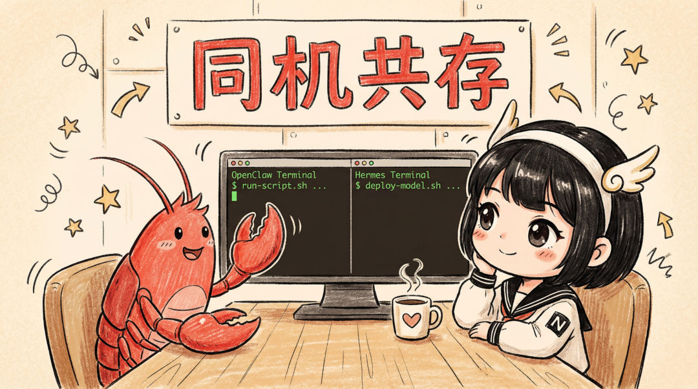
我这次装在常备的一台腾讯云服务器上，有 OpenClaw 在跑，正好看看两个能不能共处一室。
不过动手之前先说最重要的一件事：
记得把 OpenClaw 备份一遍再装 Hermes！
调教了几个月的龙虾一旦被搞崩，记忆、技能、会话记录全没了，不是一句“大不了重装”能抚平的，到时候哭都来不及。
保险动作就三条命令：
openclaw gateway stop
cp -a ~/.openclaw ~/.openclaw.bak.$(date +%Y%m%d)
openclaw gateway start顺序很重要：一停二拷三启动
cp 命令拷贝需要等待一些时间，备份完成后，我们就可以大胆地去尝试 Hermes 了。万一后面被玩坏了，这份 cold copy 就是救命稻草！
Hermes 装起来其实跟 OpenClaw 路数相近，官网给的一行 curl 直接粘贴回车就行：
curl -fsSL https://raw.githubusercontent.com/NousResearch/hermes-agent/main/scripts/install.sh | bash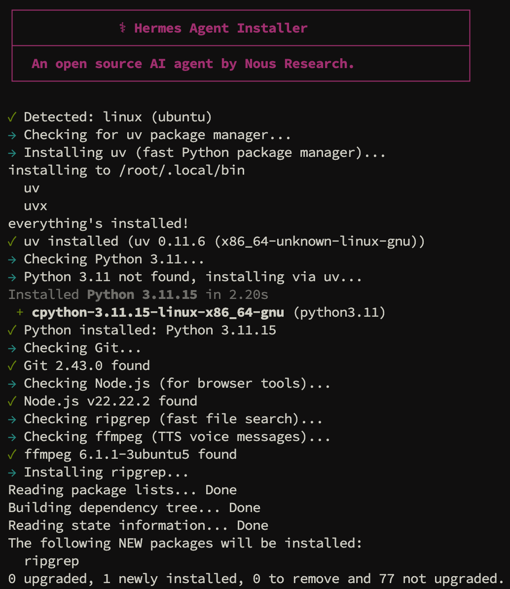
安装脚本会顺手搞定 Python 3.11、Node.js v22、ripgrep、ffmpeg 这些依赖，安装完成后会自动开始hermes setup流程向导。
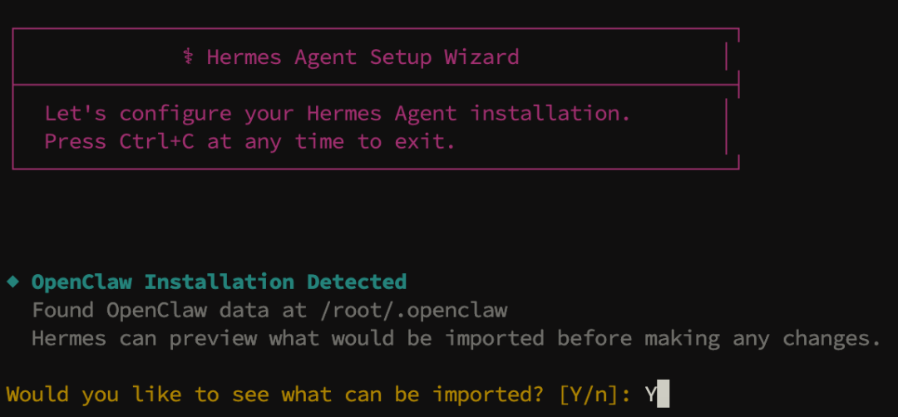
流程向导会探查当前的环境是否有安装 OpenClaw，发现后会询问你是否要看看有没有什么可导入的东西？这其实就是执行 hermes claw migrate，它能让你清楚看到哪些配置会被迁、哪些被归档，看完预览再决定下一步。--dry-run
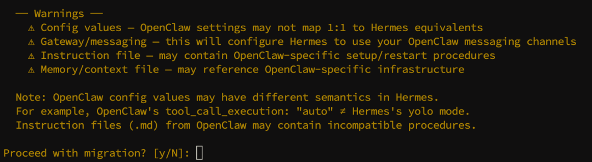
确认列出的内容，在 Proceed with migration? [y/N]: 后输入 y 开始迁移。
hermes claw migrate 会把 OpenClaw 的配置、SOUL.md、MEMORY.md、Skills、消息平台 token、MCP 服务器列表、模型配置都一把梭过来。不过 OpenClaw 的多 Agent 和频道绑定在 Hermes 里没有直接等价物，会被归档，官方建议用 profiles 再去手工重建。
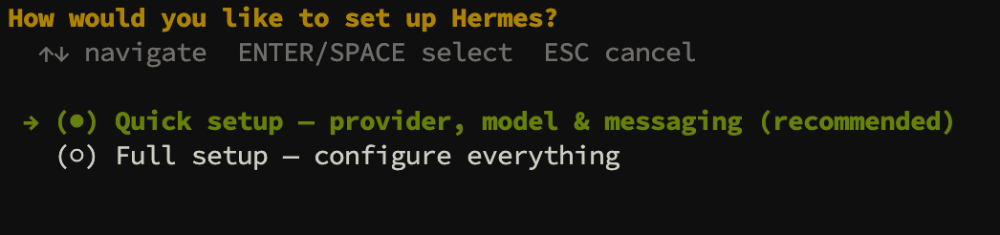
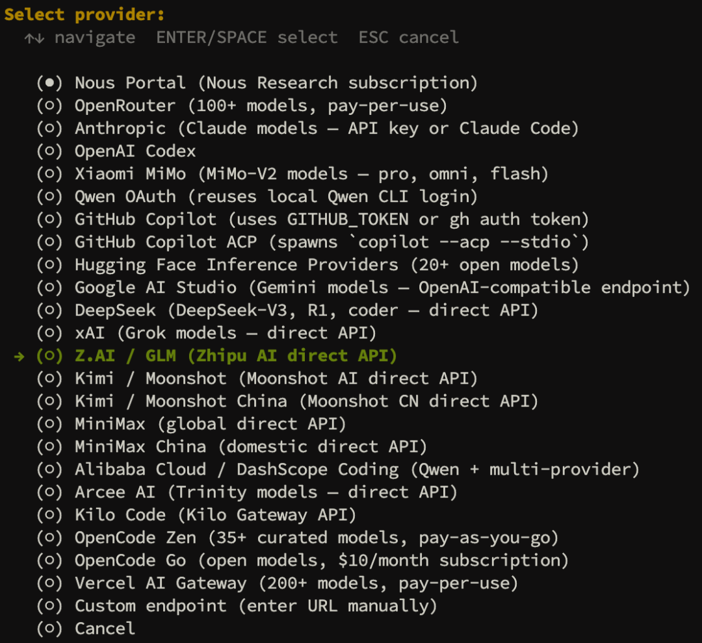
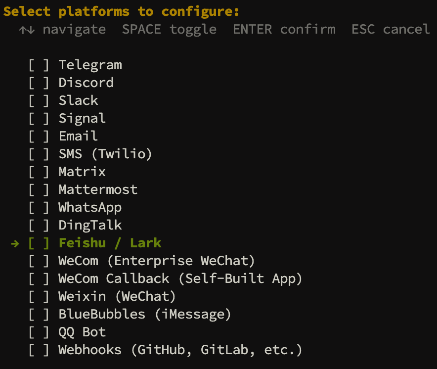
接着快速配置模型和频道，这些步骤和 #08 一行命令装好OpenClaw，注册智谱白嫖2000万Token，零花费轻松上手 中 OpenClaw 的安装操作类似。
需要注意的是：频道一般只允许一个活跃连接，和 OpenClaw 两边共用一个 token 会互相把对方踢下线，配置时需要给 Hermes 单独新建一个 bot token。
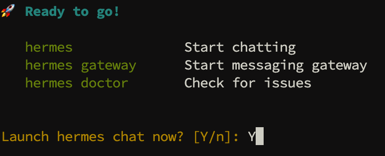
配置完成后输入 Y 运行 hermes 。
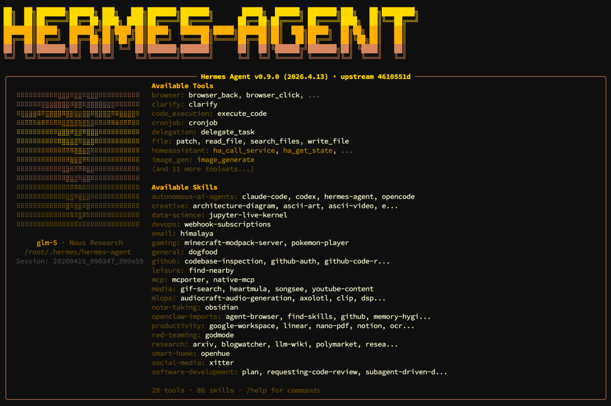
Hermes 装完后我们赶紧检查下共存安装是否顺利？
打开两个 ssh 会话，左边 hermes ，右边 openclaw tui 进入交互会话。
互不干扰，完美！
So，OpenClaw 和 Hermes 完全可以共存安装在同一台机器上！
顺便提一个常见误解
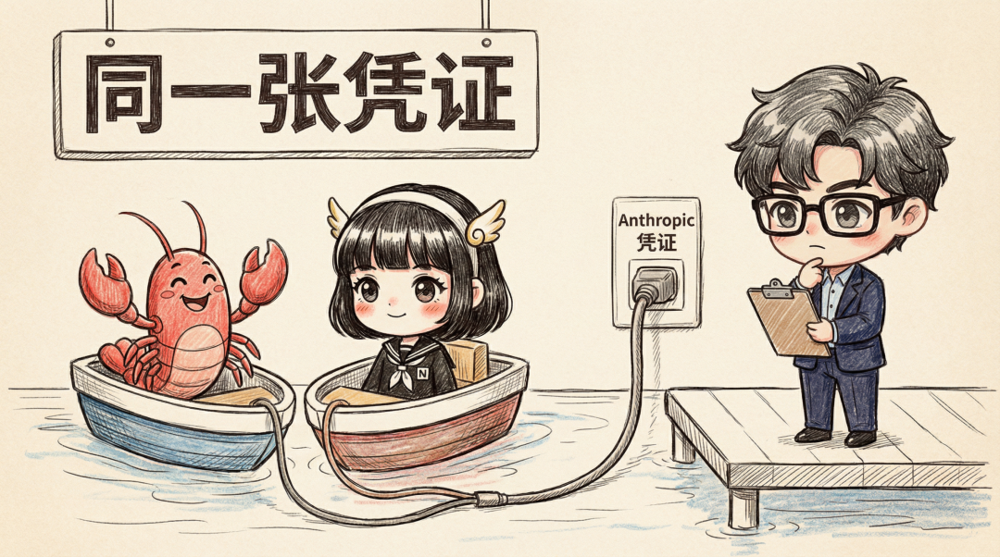
之前不少同学问我要不要赶紧把 OpenClaw 切换到 Hermes，理由里都有提到：
OpenClaw 里使用 Claude Code 订阅被官方禁了，Hermes 那边还能用。
这话半真半假：
真 的是 Hermes 现在确实暂时可以调用 Claude Code 来使用。
但无论你是凭证文件还是通过 Skill 调用，其实落到 Anthropic 后端呈现的来源其实都是：同一张订阅 OAuth 在驱动第三方 harness ，这和 OpenClaw 并没有什么本质区别。
假 的是这个现状肯定不会长久并且绝对存在风险！
别看眼下这一刻挺微妙：大部分同学反馈通过 Hermes 跑 Claude Code 没被强制走 extra usage，消耗是从普通订阅池扣的。
但是在 Hermes 的 Git issues 中已经有人撞到了「You're out of extra usage」的限制墙。
官方 Consumer Terms 早已经白纸黑字把“订阅OAuth给第三方工具用”定成违规。OpenClaw 那边调用已经凉了，指不定哪天就执行到 Hermes 头上，万一再搞个封号就得不偿失。
现在圈里的普遍态度：可以薅羊毛，但主力号不敢用！
Hermes 真正值钱的两件事
一、自我进化学习循环
每当任务完成后，Hermes 都会进行复盘，满足任一条件就自动把过程沉淀成 Skill。
条件挺具体：工具调用≥ 5次、中途出错自己修好、用户手动有纠正过、走了条非常规的但能走通的路径。
触发后 ~/.hermes/skills/ 目录下会多出一个文件。若下次有发现更好的路径它会修改这个文件，用 patch 打补丁的方式，只改该动的几行，既省 token 又安全。
Hermes 在技能层提供了一个完整接口叫 skill_manage，支持create/edit/patch/delete/write_file 这些操作，Agent 自己就能调。
二、双层默认记忆系统
- L1 持久记忆
官方把内置记忆拆成 MEMORY.md和USER.md两个文件，默认字符上限分别是 2200 和 1375 ，合计3575。这个限制的目的，是希望把每轮注入 prompt 的长期记忆压到高密度、低废话的程度。在会话开始时，Hermes 会使用 frozen snapshot（冻结快照） 策略把这两个文件内容注入 system prompt，在会话过程中写盘但不修改 system prompt 内容。这使得 prefix cache（前缀缓存）能被完整保存，对每轮对话都能做到持久记忆。 - L2 历史会话检索
你和 AI 的每一轮对话都会保存进 state.db文件，由 FTS5 全文索引，通过session_search工具调用。需要旧对话时它可以自己查、自己做摘要、辅助模型提取关键信息。
以上这两层记忆是 Hermes 默认内建、默认启用的，除此之外你还能挂载 外接memory provider，Honcho、Hindsight、Mem0、RetainDB 等均可支持，它们可以被动积累你的偏好和沟通风格。
Hermes 的优点亦是其缺点
自动化是黑盒机制
Hermes 是黑盒，你从黑盒身上学不到“为什么”。
Skill 怎么琢磨出来的？Memory 里某条偏好是哪次会话攒下的？这些细节你问不出来，一旦出问题几乎没法 Debug，只能信它。
手控精细度不如 OpenClaw
想把 Agent 调教到极其贴合自己工作流的人会更偏爱 OpenClaw。Hermes 给的感觉是“越用越懂你，越用越好用”，而 OpenClaw 给的感觉是“方向盘在你手中，由你自己来掌控”，喜欢用哪种看你自己。
OpenClaw or Hermes？到底怎么选？
不同用户，不同选择：
独立开发者或技术玩家
强烈建议安装一个试试！你完全可以继续 Claude Code 写代码，OpenClaw 编排主工作流。Hermes 这边单独开一个账号，跑一段时间需要长期记忆、自我改进的任务，看看它的学习循环到底能不能让它越用越懂你。
新手玩家
建议先直接去玩 Hermes 感受下自我进化，部署省心踩坑少，等入门后可以再去考虑体验 OpenClaw 的那份专属定制感。
Hermes 的四个小彩蛋
/yolo懒人模式一条命令即可跳过本会话所有危险命令审批，出事别怪它！
/personality切人格Hermes 预设了 14 种不同的人格，搞笑有趣。
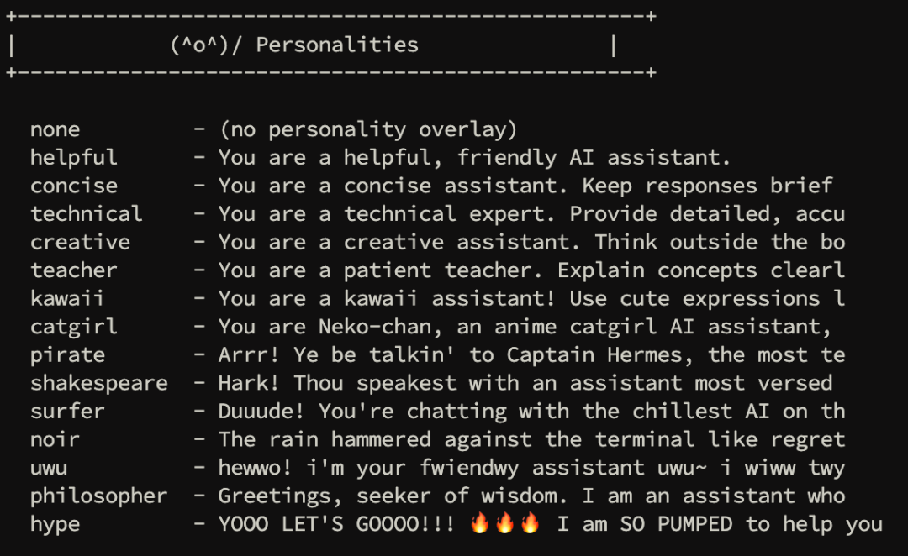
/skinTUI 皮肤系统内置 6 /套不同皮肤，总有一款适合你，都不喜欢的话你也可以选择给自己个性化定制一个。
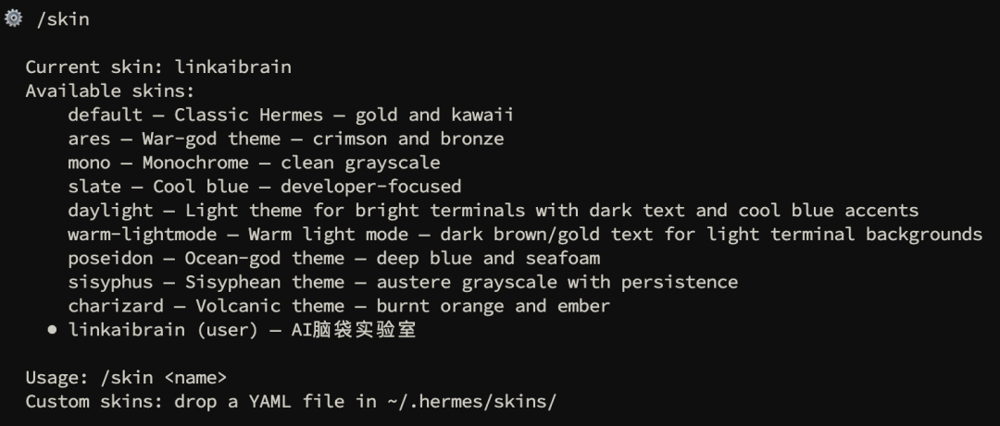
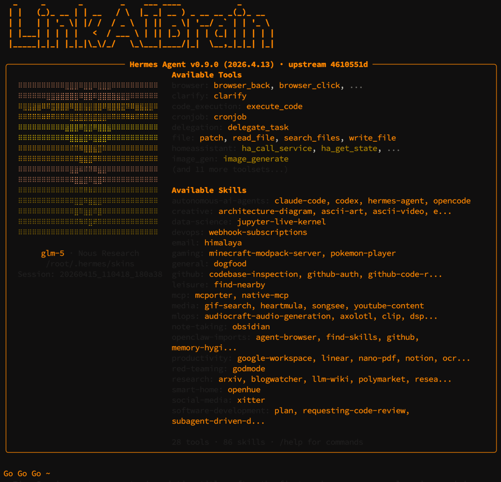
/godmode优雅避开屏蔽词聊到敏感话题被模型反射性回一句“无法协助”、或者关键词直接被吞的时候，这条命令能通过改写、形变等多种方式把 Agent 从这种条件反射里解出来。
加入社群
一个人学容易卡住，一群人学能互相带。
扫码加入「AI脑袋 × OpenClaw｜🦞学习分享交流群」，遇到问题群里问，看完文章群里聊，大家一起从零开始。
AI脑袋实验室 · 关注 | 点赞 | 分享 | 推荐